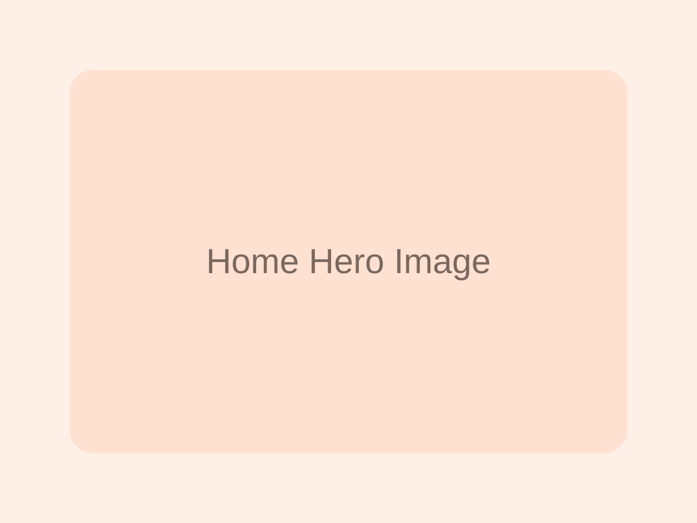

横浜市青葉区の猫専門ペットシッター
ペットホテルが苦手な猫ちゃんの
素敵なパートナー♪
ねこのようちえんは、環境の変化が苦手な猫さんのために、 ご家族がお留守の間もご自宅で普段通りの生活を送れるようサポートする 猫専門のペットシッターサービスです。
猫専門
訪問型
里親募集あり

対応エリア
田園都市線沿線を中心に対応。その他エリアもご相談ください。
スマホ表示を改善
旧サイトの雰囲気は残しつつ、スマホで見やすい構成にしています。
SNS
Facebook と Instagram でもお知らせしています
里親募集のお知らせや近況は、SNS でも発信できます。ホームページからそのまま見に行けるようにしました。